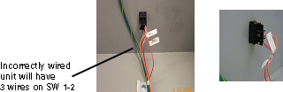

Illustration 1: PDU Switch 1-1

There should Only be Two wires going to SW 1 one wire on SW 1 & 2.
If your PDU is wired incorrectly -wires on the on SW1 –1 - continue with the PDU fix procedure.
For all PDUs that are wired correctly this is the end of the procedure. Replace and close all covers.